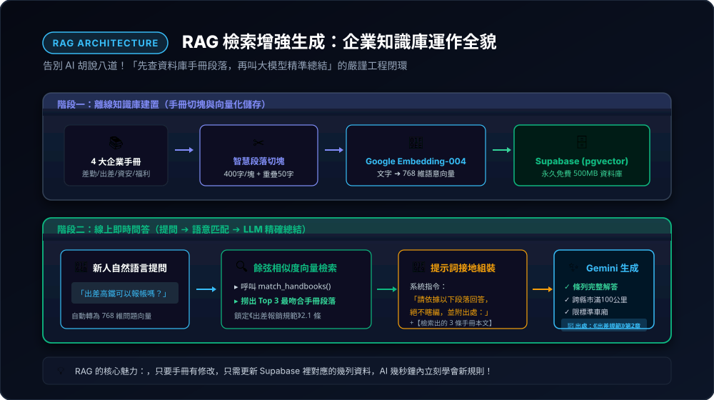
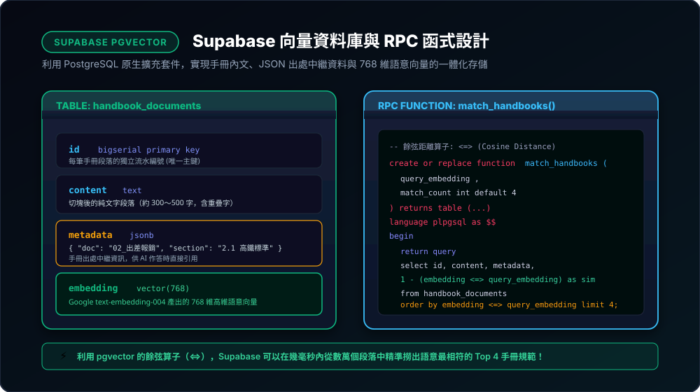

企業級 AI 知識庫實戰：打造私有版新人手冊智慧導航庫
告別散亂在各處的員工守則與作業 SOP！本章帶你使用業界標準的「Supabase (PostgreSQL) + pgvector 向量資料庫」，搭配 Google 免費 Gemini Embedding 語意模型，全程由 Antigravity 協作引導，手把手打造一套如同「Google NotebookLM」般的企業內部智慧問答系統——新人打入任何情境，系統秒速定位手冊章節並精準作答！
9-1 概念破冰：什麼是 RAG？為什麼企業手冊不能只靠 ChatGPT 瞎猜？
新職員進到一間新公司，常遇到大量問題：「確診了要怎麼請假？」、「出差高鐵可以報帳嗎？」、「筆電遺失找誰處理？」。然而，公司的差勤規章、請購規範、資安手冊、福委會規定散落在數十份 Word 或 PDF 裡，新人不知從何查起，資深前輩也疲於重複回答。
很多人的直覺是：「那直接去問 ChatGPT 或丟給 AI 不就好了？」但這在企業環境中會帶來嚴重的後果：
- ❌ AI 幻覺（Hallucination）：通用 AI 根本沒看過你公司的內部規章，它會憑空捏造看似合理但完全錯誤的請假天數或報帳上限。
- ❌ 商業機密外洩風險：隨意將整份公司機密規章直接貼入公開免費版 AI 聊天室，可能違反公司資安政策。
- ❌ 無法溯源核對：主管會問「這規定是哪本手冊寫的？第幾頁？」，通用 AI 無法給出精確出處。
解決這個難題的現代軟體工程聖杯，就是 RAG（Retrieval-Augmented Generation，檢索增強生成）！它的核心心法非常簡單：「先查資料庫手冊段落，再叫大模型照著段落說話，並附帶出處！」

先將手冊切塊轉成向量存入資料庫；當使用者提問時，系統先用數學餘弦距離抓出最相符的 3 條手冊，再由 AI 接地產出解答。
9-2 開通免費資料庫：Supabase 註冊與開啟 pgvector 向量外掛
在過去，要建構向量資料庫需要繁複的雲端叢集或昂貴的主機費。今天我們要使用在開發者界極受歡迎的 Supabase——它提供永久免費方案（500MB 資料庫空間，足以儲存數百本手冊與幾萬條向量！）。
🛠️ 步驟 1：建立 Supabase 專案
- 前往 Supabase 官方網站，點擊「Start your project」以 GitHub 帳號快速登入。
- 點擊「New Project」，設定專案名稱（例如：
company-handbook-rag）與資料庫密碼，區域（Region）選擇離台灣最近的 Tokyo (ap-northeast-1) 或 Singapore。 - 等待約 1 分鐘，專案資料庫即建立完成！

單一資料表中同時儲存「手冊文字」、「出處 JSON」與「768 維語意向量」，兼具關聯式資料庫的精確度與 AI 語意搜尋力。
📋 步驟 2：在 SQL Editor 執行一鍵建表腳本
進入 Supabase 後台左側選單的 「SQL Editor」，點擊「New query」，直接貼上由 Antigravity 規劃好的標準 SQL 語法並點擊右下角的 Run：
-- 1. 啟用 PostgreSQL 向量外掛 pgvector
create extension if not exists vector;
-- 2. 建立新人手冊知識庫資料表
create table handbook_documents (
id bigserial primary key,
content text not null, -- 手冊切塊文字
metadata jsonb not null, -- 出處標籤（書名、章節）
embedding vector(768) not null -- Google text-embedding-004 產出的 768 維向量
);
-- 3. 建立餘弦相似度比對預存程序 (RPC Function)
create or replace function match_handbooks (
query_embedding vector(768),
match_count int default 4
) returns table (
id bigint,
content text,
metadata jsonb,
similarity float
) language plpgsql as $$
begin
return query
select
handbook_documents.id,
handbook_documents.content,
handbook_documents.metadata,
1 - (handbook_documents.embedding <=> query_embedding) as similarity
from handbook_documents
order by handbook_documents.embedding <=> query_embedding
limit match_count;
end;
$$;
✅ 出現 Success 即表示你的雲端向量資料庫與比對演算法已部署完成！
9-3 示範資料庫建置：4 本核心手冊「切塊與向量入庫」
為方便大家課堂實作，我們已在專案目錄下的 handbooks/ 資料夾準備了 4 本標準且完整的企業規章範本：
《員工差勤與請休假管理辦法》：彈性上下班、特休週年制、生理假、快篩陽性應變。
《國內外出差與費用報銷規範》：高鐵滿百公里搭乘標準、六都住宿上限、每日膳雜費、統一編號。
《資訊安全與設備使用守則》：筆電遺失 30 分鐘通報、密碼 12 碼與 90 天變更、USB 唯讀限制。
《福利委員會補助辦法》：三節與生日禮金、結婚補助 1.2 萬、年度員工旅遊 1.5 萬、定期健檢。
【目標任務】：
請寫一個 Node.js (或 Python) 腳本，讀取
handbooks/ 目錄下的所有 Markdown 規章文件：1. 將手冊內容依「章節標題」與長度進行智慧切塊（每塊約 300~450 字，前後保留 50 字重疊 Overlap）。
2. 為每個切塊保留 metadata 中繼資料（包含：手冊標題、所屬章節標題）。
3. 呼叫 Google Gemini Embedding API（模型：
text-embedding-004），將段落轉換為 768 維度向量。4. 使用 @supabase/supabase-js 批次將資料寫入 Supabase 的
handbook_documents 資料表中。請提供完整腳本，並教我如何填入 Supabase URL、Service Role Key 與 Google API Key！"
執行此腳本後，不到 30 秒，4 本手冊的所有條文規章便會精整地切成數十個段落，全部賦予語意座標存入 Supabase 中！
9-4 中繼運算大腦：串聯「問題轉向量 ➔ 相似度比對 ➔ Gemini 生成」
資料在庫存好了，當新人提問時，系統後端如何精準作答？這是一套三步走的連續管線：
⚙️ 線上檢索與解答 3 部曲
- 提問向量化：新人輸入「快篩陽性可以居家上班嗎？」，後端先呼叫 Embedding-004 取得這句話的 768 維向量。
- 呼叫 RPC 檢索：向 Supabase 執行
rpc('match_handbooks', { query_embedding, match_count: 3 })，幾毫秒內精確命中《員工差勤手冊》第四章 4.1 條。 - 接地組裝 Prompt 給 Gemini：將抓出的手冊本文作為事實依據（Grounding Context），要求 AI 產出條列式的溫暖解答，並附帶引用出處。
1. 接收前端 POST 傳來的使用者情境問題
question。2. 先呼叫 Google Embedding API 將問題轉為 768 維向量。
3. 調用 Supabase 預存程序
match_handbooks 撈出最相符的 Top 3 手冊段落。4. 組裝以下系統提示詞（System Instruction）並呼叫 Gemini 1.5 / 2.0 Flash：
『你是一位企業內部貼心且專業的智慧新人導航助理。請嚴格根據以下參考手冊資料回答新人問題，不可憑空捏造。回答須條列具體 SOP、補助金額與注意事項，並在最後標明參考來源。』
5. 將生成的解答 Markdown 與來源手冊卡片清單（書名、章節、相似度分數）以 JSON 格式回傳給前端！"
9-5 前端互動實戰：打造私有版「NotebookLM」雙欄問答網頁
Google NotebookLM 最受好評的特點，就是「左邊問答、右邊隨時展示參考來源手冊」的直觀安全感。我們也讓新人導航庫具備這樣的頂級體驗！

左欄支援自然語言提問與熱門問題快捷標籤，右欄即時聯動高亮顯示吻合度最高的條文與原文連結。
🎨 NotebookLM 風格的前端三大設計要素：
- 🏷️ 新人常見情境標籤（Pills）：提供「高鐵報銷門檻」、「筆電遺失緊急通報」、「生理假需要證明嗎」、「生日假哪時休」等一鍵帶入按鈕。
- 💬 結構化 SOP 輸出：AI 解答時自動以 Checkbox 清單與加粗重點展示步驟，避免大段冗長文字。
- 📑 即時出處卡片（Source Cards）：右側卡片清楚標記規章編號、章節標題與匹配相似度（例如：
Similarity: 89.4%），點擊可展開該章節完整原文。
9-6 免費版專屬保養：7 天防休眠心跳機制（Keep-Alive）與實測驗收
使用 Supabase 免費版有一個所有工程師都會遇到的痛點：若連續 7 天完全沒有任何 API 請求，專案會自動休眠（Pause）！
💡 破解 7 天自動休眠：Google Apps Script 免費心跳法
我們在第 5、6 章學過 Google Apps Script (GAS) 具備「時間觸發器（Time-driven Trigger）」的能力，剛好拿來做免費的保活定時器：
- 建立一個空白 GAS 專案，寫入一段簡單的查詢函式：
function keepSupabaseAlive() { const url = "https://你的專案.supabase.co/rest/v1/handbook_documents?select=id&limit=1"; UrlFetchApp.fetch(url, { headers: { "apikey": "你的anon_key", "Authorization": "Bearer " + "你的anon_key" } }); Logger.log("Supabase 心跳打卡成功！"); } - 在左側時鐘圖示（觸發條件）中新增排程，設定為「每 3 天執行一次」。
- 這樣一來，你的 Supabase 資料庫將永久判定為活耀狀態，永遠不會被暫停休眠！
🎉 精彩實測驗收：挑戰真實情境題！
完成全端串接後，在你的智慧導航介面輸入以下三道真實情境測試題，見證 RAG 系統的震撼威力：
- 情境題 A（差勤與健康）：「我早上發燒快篩陽性，請問該怎麼辦？請假會扣薪水嗎？」
➔ AI 準確提取《員工差勤手冊》4.1 條，給予「通報主管與 HR、可選 WFH 不扣薪或普通傷病假半薪」的完整 SOP！ - 情境題 B（差旅報銷）：「我明天要去台中客戶那邊開會，可以搭高鐵嗎？晚上住飯店上限多少？」
➔ AI 準確提取《出差報銷規範》2.1 與 3.1 條，指出「距離跨縣市滿 100 公里得搭標準車廂；台中六都每晚住宿上限 2,500 元」！ - 情境題 C（資安緊急事件）：「我的公務筆電在計程車上遺忘了，該怎麼辦？」
➔ AI 準確提取《資訊安全守則》1.2 條，給予「30 分鐘內聯絡分機 8888 IT 熱線進行遠端鎖定抹除，並於 24 小時內前往警局開立報案三聯單」！
恭喜你！從第 1 章的 Antigravity 提示詞入門、第 2 章現代網頁、第 3~4 章 GitHub 自動化、第 5~6 章無伺服器後端與資料庫、第 7 章 LINE 即時推播、第 8 章金流收銀，到第 9 章最尖端的 RAG 企業級 AI 知識庫——你已經建立起完整貫穿「現代前端 ➔ 雲端資料庫 ➔ 金流支付 ➔ 向量檢索 ➔ 大模型落地」的頂尖商業全端開發實力！